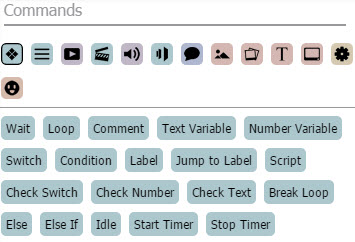
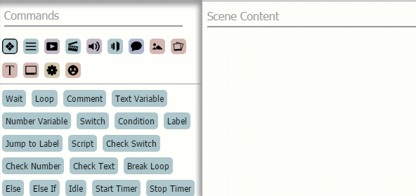
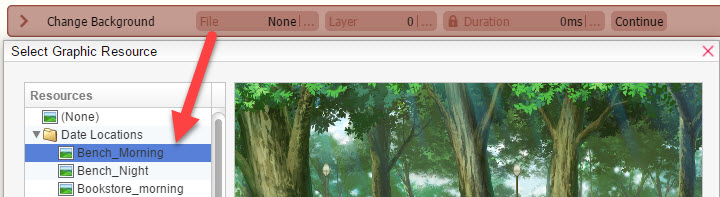
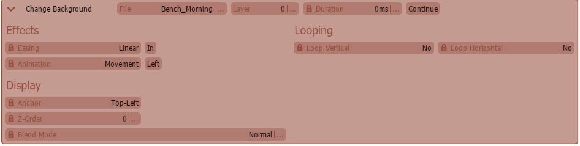
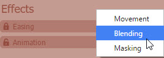
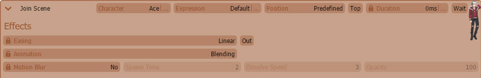
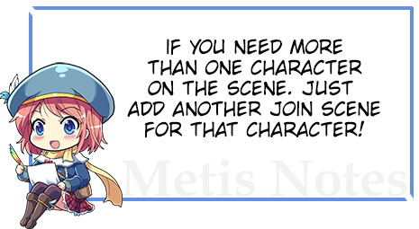
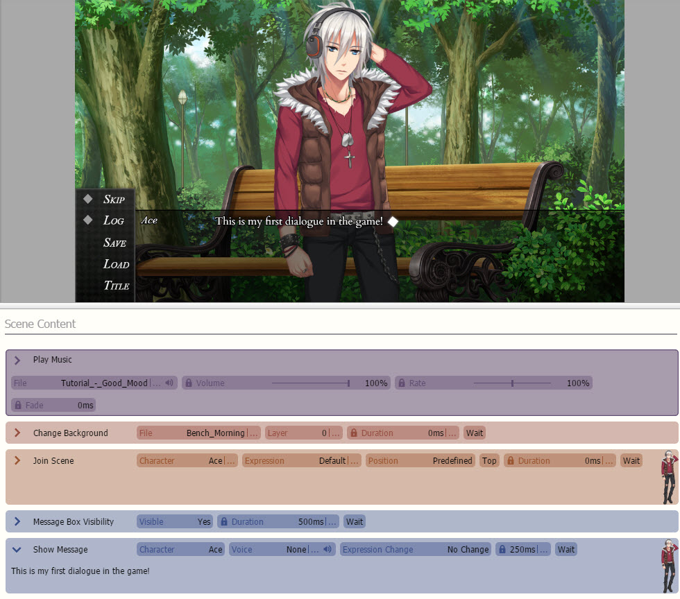

Basic命令 -- 如果你默认不在该部分的话。你也可以通过单击，拖拽或者在场景内容（Scene Content）中输入所需的命令，来添加开关命令。
Basic命令 -- 如果你默认不在该部分的话。你也可以通过单击，拖拽或者在场景内容（Scene Content）中输入所需的命令，来添加开关命令。制作你的第一个场景吧
在本教程中，我们将向你演示如何搭建一个最基本的场景。首先你得确保读过《添加章节和场景》，这样你才能明白怎么创建章节和场景！对于本次教程，我们将使用默认的样例项目。
当你第一次打开 Visual Novel Maker， 你就会注意到这块的命令面板：

如果想要查看这些命令，按下这些小图标之后，你就能看到命令列表了。添加命令有很多方法。比如，如果我们想在场景中添加一个开关（Switch）, 点击Basic命令 -- 如果你默认不在该部分的话。你也可以通过单击，拖拽或者在场景内容（Scene Content）中输入所需的命令，来添加开关命令。

现在我们知道了如何添加命令，那么让我们开始第一个场景吧！请记住，你在添加命令时可以通过实时预览来测试场景。
添加背景



添加背景音乐
在场景中添加一个角色


添加对话
 Message命令。
Message命令。
如果你正确执行了以上步骤，场景应该看起来像这样：

测试你的场景！
现在你的第一个场景已完成，是时候进行试玩了！
 保存并按下Play按钮！
保存并按下Play按钮！
注意：
你可以在 Database ->
Database ->  System选项卡中更改介绍场景和开始场景。
System选项卡中更改介绍场景和开始场景。
恭喜你，你刚刚创建了你的第一个场景！